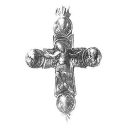
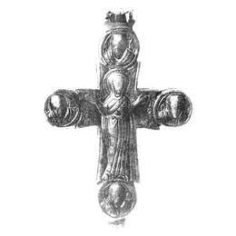

Catalog › CE-0235 · KOR2003-I.1.19
Encolpion cu capete rotunjite; Răstignire cu medalioane pe față, Orantă și sfinți pe revers
sec. XII (?) (1101–1200) · loc necunoscut · Muzeul de Istorie de Stat, Moscova (GIM), secția de arheologie, inv. 2958щ, оп. 2068В/1
double-sided reliquary cross (enkolpion), aramă; c. XII (?) (1101–1200); find spot unknown; kept at Muzeul de Istorie de Stat, Moscova (GIM), secția de arheologie.




Identificare
- Categorie
- Encolpion bivalv (relicvar)
- Material
- Aramă
- Tehnică
- Turnare în relief; Gravare (incizie)
- Dimensiuni
- Î 121 × L 97 mm
Iconografie
- Avers
- Sf. Arhanghel Mihail; Sf. Ioan
- Descriere avers
- Valvă de față: în centru imaginea Răstignirii cu lemnul crucii evidențiat; în patru medalioane la capetele crucii imagini bust ale Arhanghelului Mihail, Maicii Domnului, Sf. Ioan Evanghelistul și Sf. Ioan Botezătorul. Inscripție grecească (după Ioan XIX, 26–27) sub mâinile lui Hristos – IДЕОV/ОСОV IДОVН/МНРСО; în medalioanele laterale, în dreapta lui Hristos – ΘV, la stânga – IO; sub medalionul de sus – МНХА, în medalionul de jos – IѠ.
- Revers
- Maica Domnului Orantă; Evangheliști în medalioane; Sf. Petru
- Descriere revers
- Valvă de revers: în centru imaginea Maicii Domnului Orantă; în medalioane imagini bust ale unor sfinți: în cel de sus și de jos, evangheliștii Marcu și Matei, în cele laterale, apostolii Pavel și Petru. Monograme lângă Maica Domnului – МНР ΘV; în interiorul și lângă medalioane – МАРКОС, МАΘ, О ПАVLOС ОА ПЕТРОС.
- Inscripții
- IДЕОV/ОСОV IДОVН/МНРСО; ΘV; IO; МНХА; IѠ; МНР ΘV; МАРКОС; МАΘ; О ПАVLOС ОА ПЕТРОС
- Limba
- Greacă
Datare și atribuire
- Datare
- sec. XII (?) (1101–1200)
- Centru
- Necunoscut
- Tipologie
- Korzukhina–Peskova 2003, tip I 1
Descoperire
- Context
- Colecție (fără context)
Păstrare și referințe
- Colecție
- Muzeul de Istorie de Stat, Moscova (GIM), secția de arheologie
- Nr. inventar
- 2958щ, оп. 2068В/1
- Bibliografie
- G. F. Korzukhina, A. A. Peskova, Древнерусские энколпионы. Нагрудные кресты-реликварии XI–XIII вв., Sankt-Petersburg, 2003 [Korzukhina–Peskova 2003], p. 48, cat. nr. I 1/19, reprodusă la Табл. 7 (planșe, p. 249).
- Figura
- Табл. 7
- Planșe
- Korzukhina–Peskova 2003, Табл. 7 (planșă fără paginație proprie în PDF; p. 249 tipărită)
- Observații
- Datare după Peskova: sec. XII (?). Encolpion cu capete rotunjite; inelul de agățare și o balama de jos a valvei de revers nu s-au păstrat. Pe latura interioară se văd adâncituri în medalioane. Marginile valvelor și limitele medalioanelor sunt subliniate cu o linie adâncită; toate părțile în relief, în primul rând capetele, sunt puternic frecate. Răstignirea: tipul de veșmânt nespecificat. Coordonate: nu sunt date în sursă.
Citare: Corpus Encolpiorum, CE-0235, Encolpion cu capete rotunjite; Răstignire cu medalioane pe față, Orantă și sfinți pe revers, https://vitaliejosanu1979-ux.github.io/primul-meu-proiect/piese/KOR2003-I.1.19/ (accesat 2026-10-17).